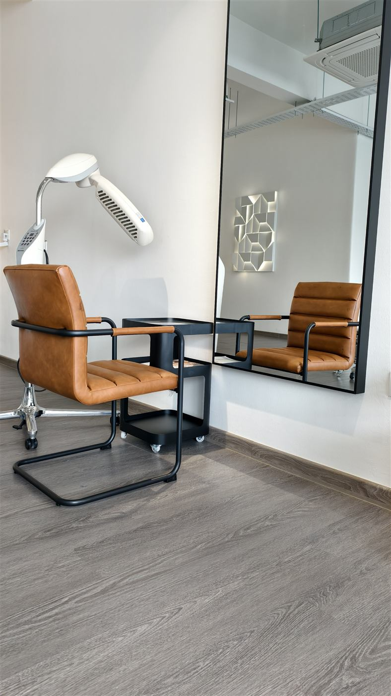

新山染发：灰色系、奶茶色、挑染Hair colour in Mount Austin, Johor Bahru.
在 Ethereal @ Colour Monster，发型师 Ching 至青 会先看你的底色、发质和过去的染发记录，再决定颜色和做法。想要灰色系、ash beige、奶茶色、挑染，或大胆的亮色，都可以先 WhatsApp 发照片给我们看看。
- 染发 RM180 起
- 日本染膏 · 专业护色
- 10am–6pm · 星期四休息
- 需预约

染之前，先看懂你的头发Hair first, colour second.
同一个颜色，染在不同的头发上，效果会很不一样。底色深浅、发质粗细、有没有漂过或烫过，都会影响最后的颜色。所以我们会先检查头发，再告诉你适不适合、需要几次、大约多少钱，不会一开始就推你做最贵的。
We check your base colour, hair condition and colour history first, then tell you honestly what is possible, how many sessions it may take and the cost.
冷色调、低调又有质感。大部分灰色需要先提亮，会先评估头发能不能承受。
柔和显白、日常好搭，适合第一次染发或想要自然一点的人。
挑染增加层次；想要紫色、粉色等大胆颜色，也可以一起讨论。
染发价钱Hair colour price (RM)
染发、挑染、漂发都适用。实际价钱会根据长度、发量和头发状态调整，可以先 WhatsApp 照片询价。
客人怎么说From our Google reviews
"Looks younger with my new highlights. Happy me!"
"The outcome colour matches with my expectation also!"
"超级满意的一次染发体验！头发不干不毛躁，效果比预期还好。"
"The only hair salon that helped me with a crazy vibrant hair colour."
染发常见问题Hair colour FAQ
新山 Mount Austin 染发多少钱？
短发 RM180 起，中长发 RM260 起，长发 RM300–330。护色 +RM100。实际价钱会根据长度和头发状态调整。
染灰色系一定要漂发吗？
要看你现在的发色和发质。大部分灰色系需要先提亮，Ching 会先检查头发，再告诉你需要几次、适不适合。
怎样让颜色维持久一点？
回家用护色洗发水，避免太热的水洗头。做完之后我们会教你怎么洗、怎么保养。
需要预约吗？
需要。营业 10am–6pm，星期四休息，请先 WhatsApp +6011-7012 2592 预约。
想换颜色？先发张照片给我们Send us a photo of your hair.
告诉我们你想要的颜色，我们会先看你的头发，再给你建议和报价。